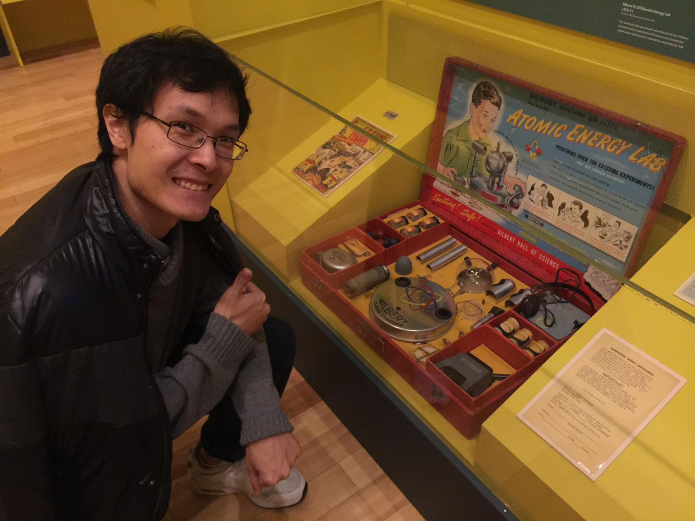

Shengchao Li is an assistant professor in the School of Science at Westlake University. Shengchao was a postdoc in the Dark Matter Group at Purdue University, and a Ph.D. student in the Center for neutrino physics at Virginia Tech. He is a member of the XENONnT Experiment and the Windchime Project. He and his group are intersted in detecting dark matter and neutrinos through highly sensitive detectors, and study the physics beyond the Standard Model.
Email / Department Website / XENONnT Experiment / Windchime Project
News
Recent Research
To be updatedGroup Members
Shengchao Li
李圣超
Group Leader
lishengchao[at]westlake.edu.cn
Shaowei Ma
马少薇
Administrative Assistant
mashaowei[at]westlake.edu.cn
Selected Publications
(* with corresponding authorship)Full list: INSPIRE, ORCiD
Activities

Sep 22,2023
Visiting student in our lab in summer 2023
Join Us
We always welcome self-motivated students joining us! There is a wide spectrum of research that can be done in our group.
Students should show a strong research and academic background in one or more of the following areas: Physics, Mathematics, CS, EEE, etc.
Undergraduate and Master's students are encouraged to contact Dr. Shengchao Li to express his/her interest in pursuing a Ph.D. degree in Physics at Westlake University.
Westlake University Admissions Dynamics: PH.D.PROGRAMS
We hire postdocs following the standard program in China. Westlake and Hangzhou government offers a competitive package. Candidates can work freely on topics related to liquid xenon detectors or quantum-enhanced gravitational detection. Below is our recent ad:
Postdoc position in Shengchao Li Lab, School of Science/
We welcome intern students in our lab, we have already hosted students from HK and the UK. Please drop an inquiry and we will be in contact.